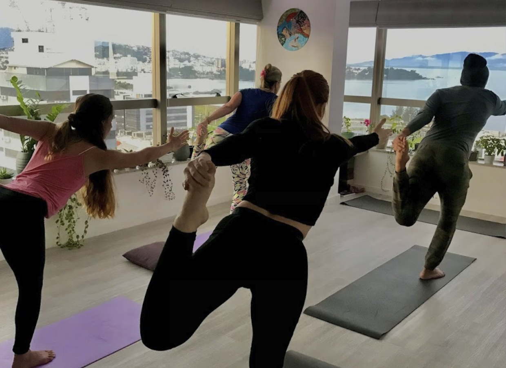
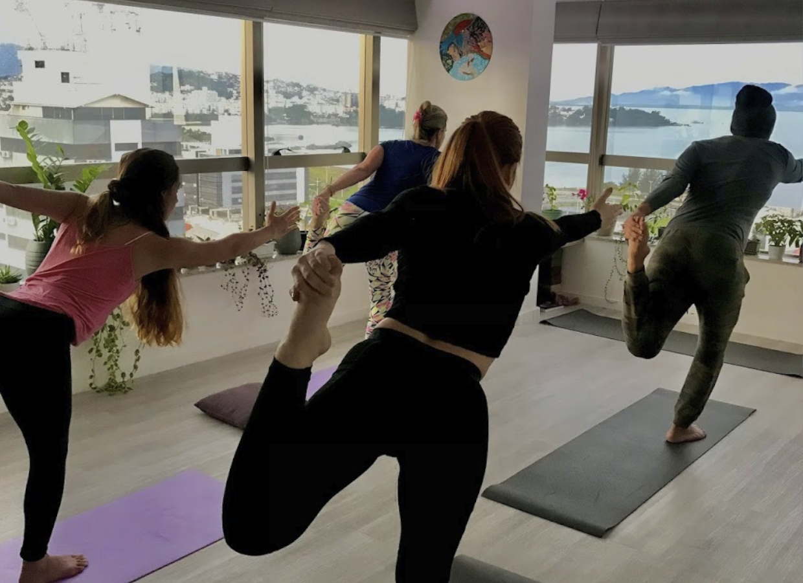

Conheça sobre a história do Renascer...


Em março de 2016, Karan Alves Pereira (fundador do Espaço Renascer) passou por um de seus momentos mais difíceis na vida. Desacreditado e sem fé em Deus e na humanidade, se viu doente. Nada lhe fazia mais sentido. A hipocrisia enxergada nas igrejas, somada a hábitos irregulares de um jovem de 23 anos, fez com que ele adoecesse.
Nesse momento de dor, ele se reencontrou com Deus através da Doutrina Espírita, que lhe trouxe consolo e instrução diante da vida. Se interou das atividades doutrinárias, mergulhou nas literaturas e começou a assumir novas responsabilidades dentro desse cenário.
No ano de 2021, já vivendo em harmonia e equilíbrio, sentiu um desejo profundo de ajudar um amigo que já atuava na área da saúde a levar a cura para as pessoas. Possivelmente, esse seria um caminho para retribuir toda a ajuda recebida nos momentos difíceis. Iniciou-se ali uma parceria para oferecer um espaço que promovesse a cura integral (Corpo, Mente e Espírito) para o ser humano.
O Espaço Renascer foi inaugurado em 16/10/2021 em São José/SC - Brasil, com a presença de amigos e familiares. A estrutura física contava com 4 salas, sendo elas:
- Aruanda (Amor): Sala de uso coletivo destinada a práticas de Yoga, cursos e palestras.
- Arcturus (Cura): Destinada para atendimentos individuais (Reiki, Thetahealing, Barras de Access, Leitura de Aura...).
- Oriente (Conhecimento): Utilizada para atendimentos individuais (Massoterapia, Estética, Psicologia...).
- Capela (Evolução): Para atendimentos individuais (Nutrição, Constelação Familiar, Respiração do Renascimento...).
A proposta do espaço foi oferecer um ambiente aconchegante para os pacientes e parceiros, com o objetivo de crescimento mútuo. O parceiro pagaria um percentual do seu serviço para o espaço e receberia uma infraestrutura adequada, bem como suporte na realização de suas atividades (marketing, vendas, networking, gerenciamento...).

 



No período de funcionamento (2021 a 2022), o Espaço Renascer contou com cerca de 30 parceiros, mais de 700 clientes, 15 eventos e mais de 2.000 atendimentos.
O espaço foi fechado no final de 2022 devido a mudanças societárias e às dificuldades enfrentadas pelo gestor (Karan) em conciliar o gerenciamento da clínica com outras atividades profissionais.
Toda a proposta do Renascer teve um cunho muito espiritual, originado pelo desejo iminente de ajudar a humanidade. Ter um direcionamento comercial baseado nesse contexto era um contrassenso. A clínica Renascer fechou, mas o desejo de ajudar permaneceu.
Com esse desejo ativo, Karan conheceu Rosana em um trabalho voluntário em um centro espírita, e os dois decidiram fazer uma sessão de Ayahuasca na casa de Rosana, conhecida como Casa do Rezo.
O projeto foi renascendo em comunhão com o Cristo, outras pessoas foram chegando e novas atividades foram incorporadas.